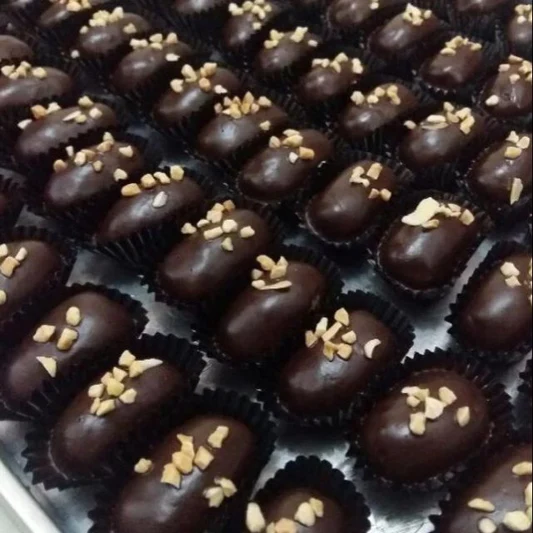

Resep kue kering Kurma Coklat

Bahan-Bahan:
- 1 kg kurma
- 250 gram kacang kupas
- 500 gram DCC
- 50 gram coklat putih
Langkah-Langkah:
- Langkah 1 :
- Cuci bersih kacang kupas, panggang dalam oven dengan api sedang hingga matang. Kurang lebih 20-30 menit. Bisa juga disangrai. Sisihkan.
- Langkah 2 :
- Cincang coklat putih, masukkan kedalam piping bag, ikat. Letakkan piping bag berisi coklat putih ke dalam magic com, biarkan meleleh.
- Langkah 3 :
- Sayat kurma (jangan sampai putus), keluarkan bijinya. Masukkan kacang panggang kedalam kurma sebagai pengganti biji. Rapatkan lagi daging kurma.
- Langkah 4 :
- Cincang DCC, letakkan di wadah tahan panas. Tim DCC dalam panci berisi air dengan api kecil hingga meleleh. (Coklat 500 gram saya lelehkan dua kali. Jadi pertama saya lelehkan 250 gram, terus dipakai dulu. Baru selanjutnya ngetim yang 250 gram lagi. Supaya nggak cepet keras waktu dipakai.)
- Langkah 5 :
- Masukkan satu persatu kurma kedalam lelehan coklat. Tiriskan dan biarkan mengeras.
- Langkah 6 :
- Keluarkan piping bag berisi coklat putih yang telah meleleh. Gunting ujung piping bag, lalu hiaskan coklat putih diatas kurcok.
- Langkah 7 :
- Setelah mengeras, bisa disimpan dalam wadah kedap udara.